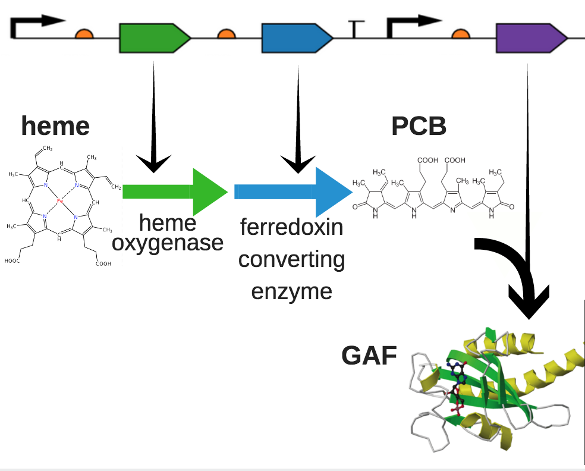

<div class="container">
	<div class="row row-centered">
		<div class="blue col-centered col-xs-12">
			<h1>Product Optimization</h1>
			<p>Given that our project focuses on how to bring GAF proteins into the food colorant industry and have large scale production, an obvious concern is what effects GAF protein production and how it can be optimized. Our team first focused on how the activation of the phytochromes photosensory properties are dependent on the availability of the bilin cofactor (12). We tested two different GAF protein genetic constructs in E.coli and calculated their expression level at varying induction levels to find that ______. Next our team focused on optimizing the genetic circuit of GAF expression to produce the highest protein expression. While our team was not able to produce concrete results from our genetic circuit work, we provide a detailed experimental design and our work thus far. 
			</p>
		</div>
		<div class="row row-centered">
			<div class="col-centered col-xs-12">
				<h3>Motivation</h3>
				<p>In order for GAF proteins to be industrially competitive with other natural dyes, the production capabilities need to be comparable. ….. Bc Capitalism lol </p>
				<h3>Induction Experiment</h3>
				<p>TO BE WRITTEN</p>
				<h3>Genetic Circuit Experiment Design</h3>
				<p>Because the GAF protein must associate with a bilin cofactor in order to be photoactive, an engineered cell must also be able to express the necessary enzymes that convert heme into the cofactor. Such an expression system that requires multiple coding genes has room for optimization in order to control the flux of the protein production. For example, upregulating expression of one of the heme-converting enzymes would theoretically increase bilin production and consequently affect overall production rate of the complete protein. Optimizing the pathway would be the next key step in advancing to industrial-scale mass production.
				</p>
				<div id="GAFbg">
					
				</div>
				
				<p>Our next step will be to design and test various operon structures for the key genes for protein production. From the iGEM registry, there are collections of promoters and ribosome binding sites of various strengths. We can design an operon library in which we swap promoters and RBS’s used to regulate expression of each gene. Monocistronic and polycistronic variants can also be considered, as well as gene order. Such a library would have thousands of variations. Experimentally measuring overall protein production will provide insight of what structure, gene order, and regulatory components will produce the most efficient genetic circuit for protein production.</p><p>
				From the current registry catalog, we can use the Anderson collection of constitutive promoters since they span a wide range of relative strength. The community RBS collection can also be considered for their popularity. 
				</p><p>
				In an effort to explore the effect of operon structure on GAF protein expression, we designed an experiment which will construct an operon library with a total of 5,012 variations. This operon library could then show what structure, order, and parts make the most efficient genetic circuit. </p><p>
				Initially we chose 8 promoters, 4 ribosome binding sites, and 3 different plasmid structures we hypothesized could significantly upregulate the protein expression. </p><p>
				Overall, we were able to _____(idk how far jon/samir got). </p>
				<h3 class="inline">Future Directions</h3>
				<p>In the future, our team would like to do a more thorough investigation into induction quantity. We found our results that different GAF proteins required different amounts of the cofactor to be quite interesting and would like to expand our experiment to include other GAF proteins and also GAF proteins which use biliverdin as their cofactor, unlike the PCB cofactor the protein we expressed were. If we find the trend that cofactor availability affects different GAF proteins differently we would like to investigate what three dimensional aspects to the protein are influencing this. </p><p>
				As for the genetic circuit design, our team would like to finish the last bit of the operon library to find if there is an optimal genetic circuit that significantly upregulates or downregulates GAF protein expression. </p>
			</div>
		</div>
			<div class="col-xs-6 col-centered projLinks">
				<a href="{{"GRAS.html"| prepend: site.baseurl }}" class="navBtn">Next: Expression in a GRAS Organism</a>
			</div>	
	</div>
</div>